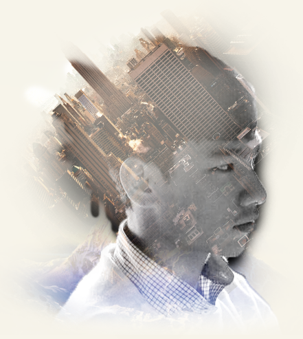

My Story
目前就讀於國立台北教育大學大四學生， 本系目標在於培養數位科技與視覺設計之跨領域人才， 也是我持續努力的方向，喜歡做的事情有很很多，包括攝影，剪接， 擔任過導演並製作微電影，而深入鑽研的領域包括motion graphics， 3Ds Max場景建模與網頁前端設計，而我目前的職涯目標是成為一個產品設計師， 也就是 UI/UX設計師。而個人最鑽研的職位是互動設計師， 非常熱愛微互動，與設計產品使用流程及刻畫wirframe及prototype， 對於使用者訪談研究也很有興趣。
除此之外我也喜歡做很多不一樣的事情，包括當走秀model， 擔任國慶禮賓人員，拍攝youtube影片。我認為靈感來自於生活， 所有一切我所遇到的事情都會成為我做所有事情的靈感來源， 具有強烈的好奇心，而我相信身為一個UI/UX設計師， 本身也就需要具備強烈的好齊心， 與開放的思維去瞭解他所不了解的領域，具有同理心。
